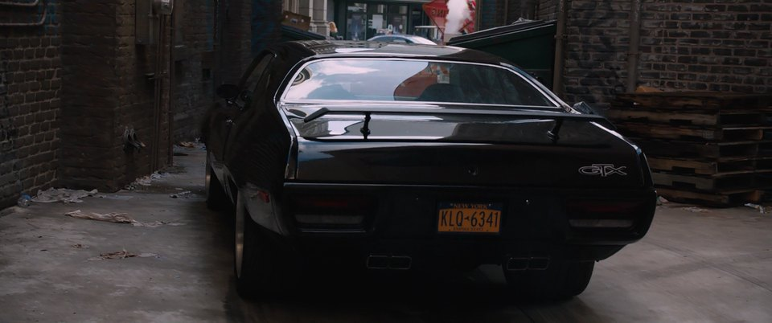

.jpg)
Since we got an inside from the origins of this beauty the
question has to asked, is it just a pretty show car or does it do justice to the muscle car family?
Truth be told this car is beautiful as it is rare and a beast. Let its pretty face not full you course
it makes up for it on the road. This beast did wonders on the track as it destoryed some of the best
and fastest cars in the world today.
The list consist of Mercedes Benz SLS 63S, BMW M3 Competition, Audi TT RS just to mention a few.
As impressive
as it is the Plymouth GTX is very rare and this modified version isn't available in the market, so if you want to
get your hands on this beast you have to fish for the 1971 edition and hopfully you will find it in great shape.
So what makes this pretty thing better than the cars of today, well it consists of a twin turbo duel cluth, 7,4L
V12 Dodge/Chervolet engine with an impressive 3500 horsepower, fuel injection and double nitrous if you wanna get
nasty and leave your competition for dead in a drag race of course, also the interior is 100% leather with suede finishing.
With all that power under the hood you ask, how much does it cost?
Well with great power comes great cost. It clearly won't come cheap as it stands at $1,2 million US Dollars. Yes it's
expensive but if you looking to make extra cash and kick in the adrenaline then this is the car for you.
S0 with all that how many stars do we give it?
We give it an impressive 6 and half stars out of 5. This car has clearly won us over and we believe this is the best
modified car ever made.
.jpg)


The Plymouth GTX was featured in the movie FAST 7 and Vin Diesel who plays Domenick Torreto had high praises for the care and rightfully so as its extraoridinary.
The clip below is the Plymouth GTX review from a major car fanatic